PARTIE I — LE SITE PUBLIC (Front-Office)
1. Presentation generale de la plateforme
2. Page d'accueil
3. Actualites
4. La DGIE — Presentation institutionnelle
5. Nos Services
6. Retour et Reintegration
7. Investir et Contribuer
8. Coin des Diasporas
9. Dossiers thematiques
10. Galerie
11. Contact et formulaires publics
PARTIE II — L'ADMINISTRATION (Back-Office)
12. Connexion et securite
13. Tableau de bord
14. Gestion des Articles
15. Categories et Flash Infos
16. Evenements
17. Personnel et Partenaires
18. Coin des Diasporas (admin)
19. Nos Services et La DGIE (admin)
20. Mediatheque (admin)
21. Communication
22. Administration — Utilisateurs et Parametres
ANNEXES
A. Roles et permissions
B. Conventions et bonnes pratiques
C. Plan du site complet
PARTIE I — LE SITE PUBLIC (Front-Office)
Le site ivoiriendelexterieur.com est la vitrine numerique de la Direction Generale des Ivoiriens de l'Exterieur (DGIE). Il s'adresse a la diaspora ivoirienne et au grand public, et propose des informations institutionnelles, des actualites, des services, et des ressources pratiques.
1 Presentation generale
La plateforme se compose de deux espaces distincts :
| Espace | Adresse | Acces |
|---|
| Site public | https://ivoiriendelexterieur.com | Ouvert a tous les visiteurs |
| Administration | https://ivoiriendelexterieur.com/admin/login | Reserve aux administrateurs |
Le site public comporte 10 rubriques principales accessibles depuis le menu de navigation en haut de chaque page.
2 Page d'accueil
La page d'accueil est le hub central du site. Elle regroupe les informations les plus importantes et oriente les visiteurs vers les differentes rubriques.
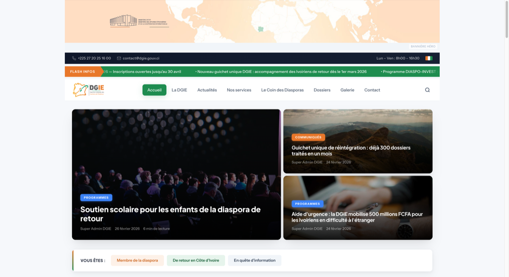
Page d'accueil — Banniere hero, barre de navigation et flash infos
Elements de la page d'accueil (de haut en bas) :
| Element | Description |
|---|
| Barre superieure | Liens institutionnels et coordonnees rapides |
| Flash infos | Bandeau defilant avec les messages d'actualite urgente |
| Menu principal | Navigation vers toutes les rubriques du site |
| Banniere hero | Grande image de mise en avant avec titre et bouton d'action |
| Articles a la une | Les 3 derniers articles publies en vedette |
| Bandeau d'orientation | 3 cartes d'acces rapide : Retour, Investir, Actions sociales |
| Dernieres actualites | 4 articles recents en grille avec sidebar (evenements, chiffres cles) |
| Galerie | 2 derniers albums photos/videos publies |
| Mediatheque | 5 dernieres videos YouTube en embed |
| Partenaires | Logos des partenaires institutionnels |
| Newsletter | Formulaire d'inscription a la newsletter |
| Pied de page | Informations legales, liens utiles, reseaux sociaux |
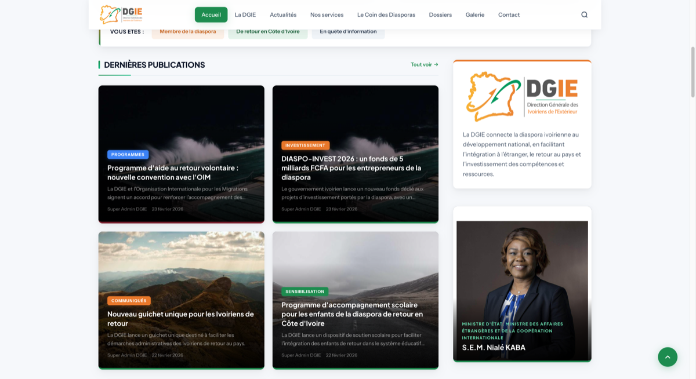
Page d'accueil — Articles a la une et bandeau d'orientation
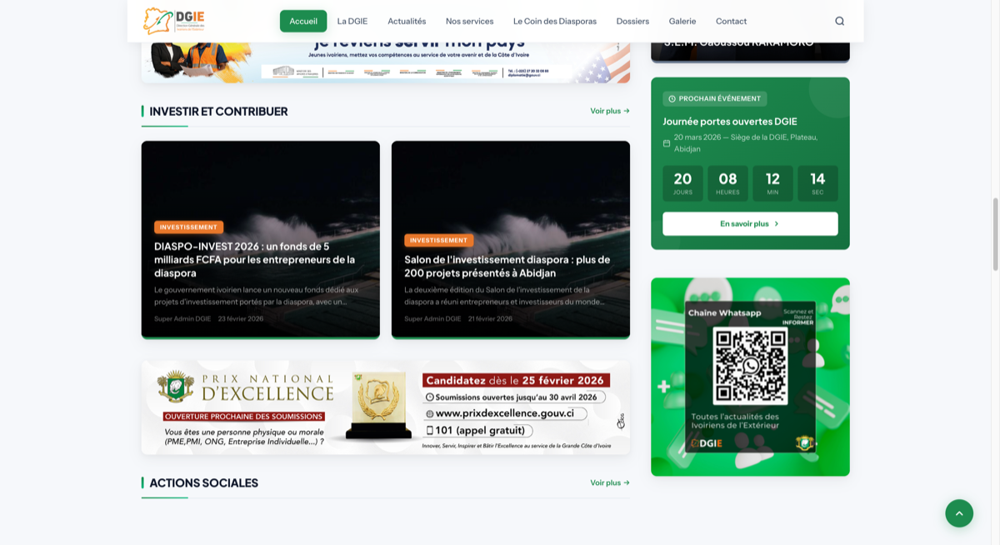
Page d'accueil — Sections Galerie et Mediatheque
Popup evenementiel : Lors de la premiere visite d'un utilisateur, une fenetre modale peut s'afficher pour mettre en avant un evenement important. Elle ne s'affiche qu'une seule fois par session.
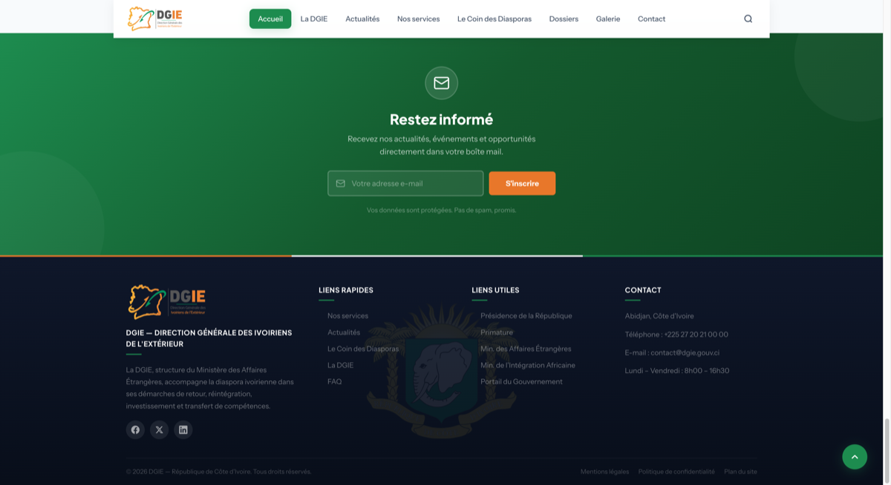
Pied de page du site — Liens, reseaux sociaux et mentions legales
3 Actualites
La page Actualites (/actualites) liste tous les articles publies, classes par date de publication decroissante.
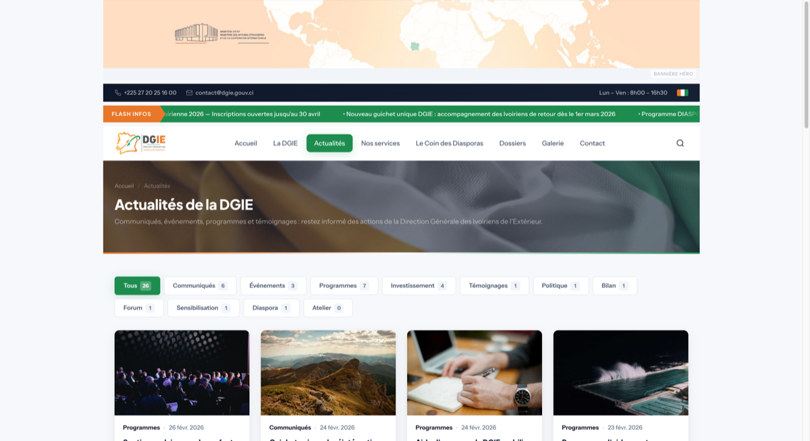
Page Actualites — Liste des articles avec filtres par categorie
Fonctionnalites de la page :
- Filtres par categorie : cliquez sur une categorie pour afficher uniquement les articles correspondants
- Pagination : naviguez entre les pages si le nombre d'articles est important
- Article individuel : cliquez sur un article pour lire son contenu complet, avec image, auteur, date, et boutons de partage (Facebook, Twitter/X, LinkedIn, WhatsApp)
- Commentaires : les visiteurs peuvent laisser un commentaire sur chaque article (soumis a moderation)
4 La DGIE — Presentation institutionnelle
La page La DGIE (/la-dgie) presente l'institution, son organigramme et ses trois sous-directions.
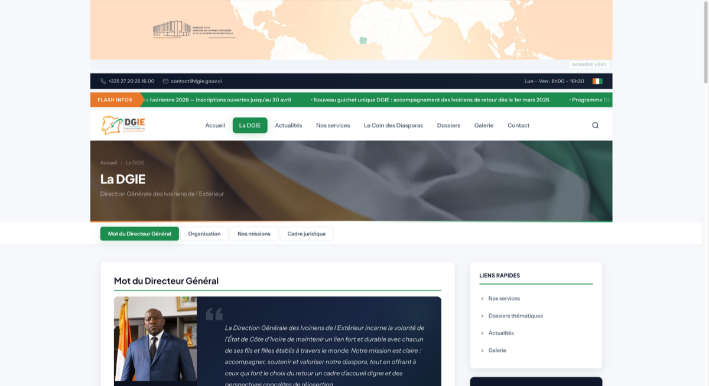
Page La DGIE — Presentation de l'institution et organigramme
Contenu de la page :
- Presentation du Ministre et du Directeur General avec portraits et citations
- Les 3 sous-directions de la DGIE :
- DAOSAR — Direction de l'Assistance, de l'Orientation, du Suivi et de l'Accompagnement au Retour
- DMCRIE — Direction de la Mobilisation des Competences et des Ressources des Ivoiriens de l'Exterieur
- DAS — Direction de l'Action Sociale
- Documents officiels telechargeables
5 Nos Services
La page Nos Services (/nos-services) presente les services proposes par la DGIE aux Ivoiriens de l'exterieur.
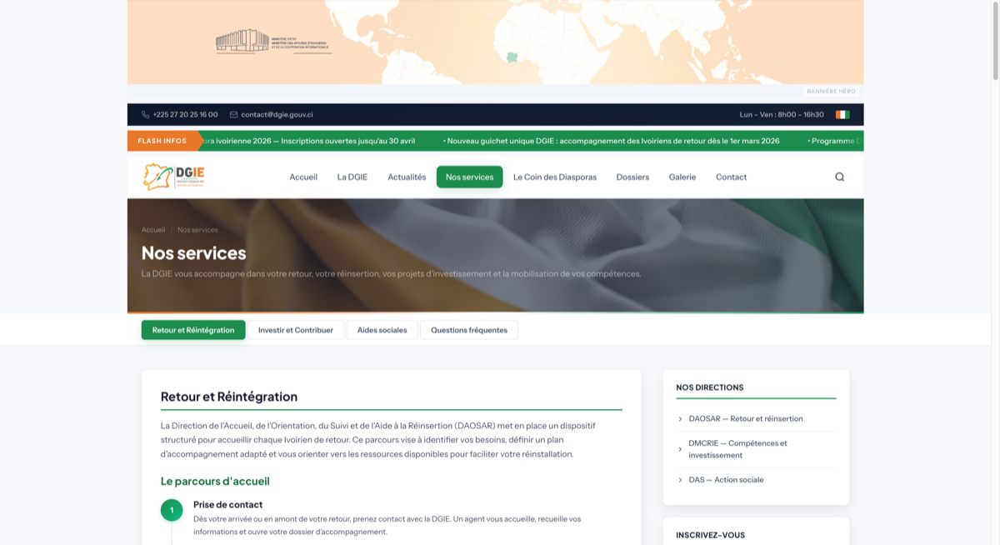
Page Nos Services — Presentation des services offerts par la DGIE
On y retrouve les services d'assistance consulaire, d'accompagnement au retour, de mobilisation des competences, et de soutien aux investissements de la diaspora.
6 Retour et Reintegration
La page Retour et Reintegration (/retour-reintegration) est dediee aux programmes d'accompagnement au retour des Ivoiriens de l'exterieur.
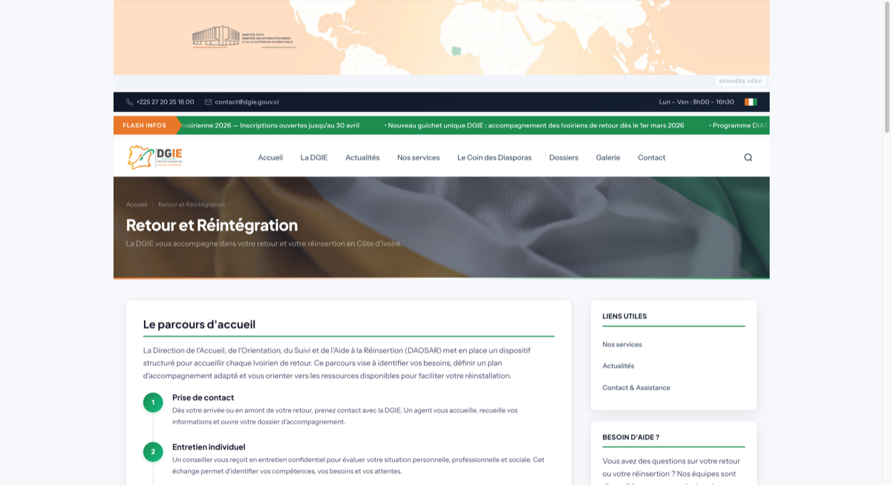
Page Retour et Reintegration — Programmes et temoignages
Contenu de la page :
- Programmes de retour volontaire et de reinsertion
- Temoignages de personnes ayant beneficie de ces programmes
- Articles lies a cette thematique
- FAQ sur les procedures de retour
- Dossiers thematiques associes
7 Investir et Contribuer
La page Investir et Contribuer (/investir-contribuer) s'adresse aux membres de la diaspora souhaitant investir ou mettre leurs competences au service de la Cote d'Ivoire.
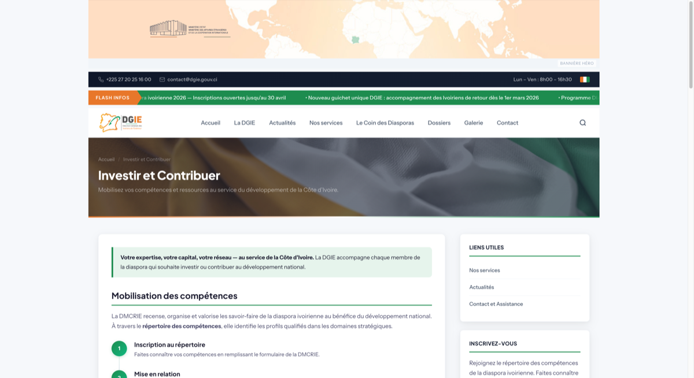
Page Investir et Contribuer — Opportunites pour la diaspora
Contenu de la page :
- Opportunites d'investissement
- Programmes de mobilisation des competences
- Temoignages d'investisseurs de la diaspora
- Articles et dossiers lies
8 Coin des Diasporas
La page Coin des Diasporas (/coin-des-diaspos) est l'espace communautaire dedie a la diaspora ivoirienne.
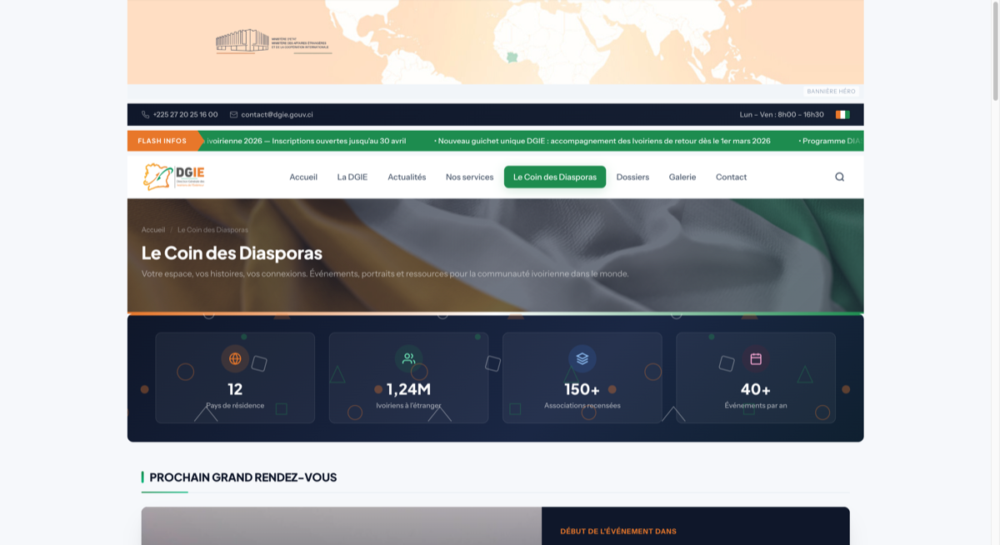
Page Coin des Diasporas — Espace communautaire
Sections de la page :
| Section | Description |
|---|
| Evenements diaspora | Evenements organises pour la communaute diasporique |
| Temoignages | Recits et experiences de membres de la diaspora |
| Pays de la diaspora | Carte des principaux pays de concentration |
| Sondage | Sondage interactif pour recueillir les avis |
| Coups de coeur culturels | Recommandations musique, livres, films, gastronomie |
| Boite a outils | Ressources et liens utiles pour la diaspora |
9 Dossiers thematiques
La page Dossiers (/dossiers) presente des dossiers de fond sur des sujets cles (retour volontaire, cadre juridique, competences diaspora, investissement, partenariats, etc.).
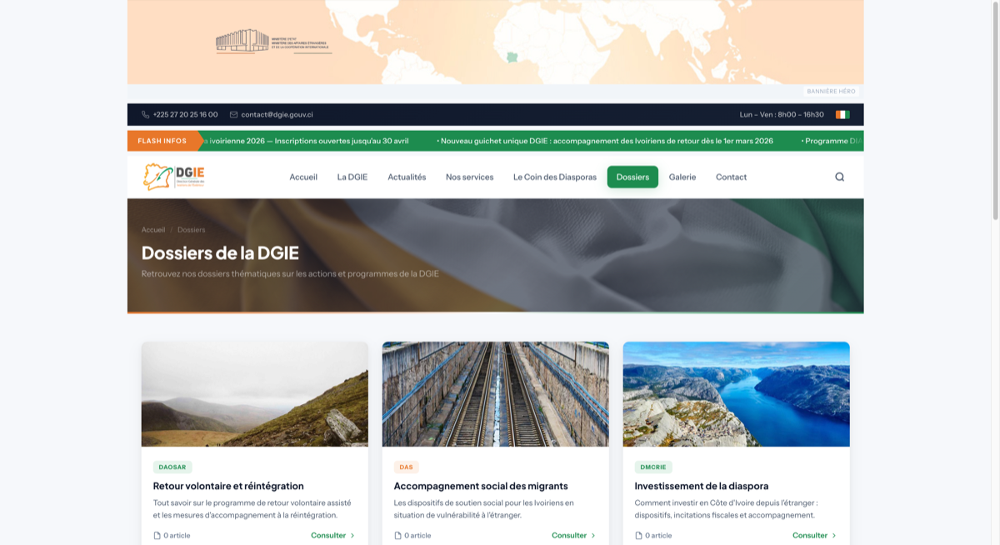
Page Dossiers — Dossiers thematiques approfondis
Chaque dossier est une page complete avec contenu enrichi, articles lies, temoignages associes et FAQ.
10 Galerie
La page Galerie (/galerie) rassemble tous les albums photos et videos publies.
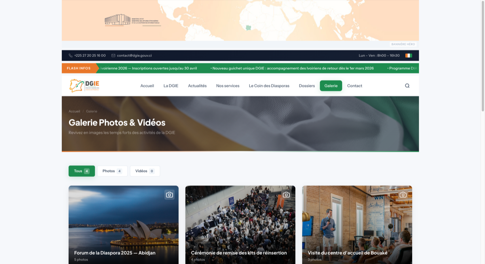
Page Galerie — Albums photos et videos
Fonctionnalites :
- Filtres : affichez tous les albums, uniquement les photos, ou uniquement les videos
- Lightbox : cliquez sur une image pour l'agrandir en plein ecran avec navigation
- Compteur : chaque album affiche le nombre de medias qu'il contient
11 Contact et formulaires publics
La page Contact (/contact) permet aux visiteurs de contacter la DGIE.
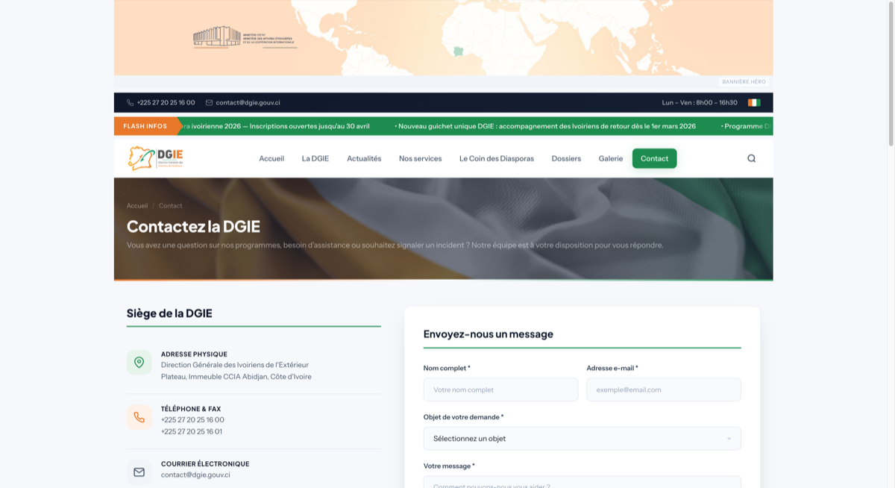
Page Contact — Formulaire de contact et coordonnees
Contenu de la page :
- Coordonnees officielles : adresse, telephones, e-mail
- Formulaire de contact : nom, email, telephone, sujet, message
- Carte : localisation des bureaux
Limitation anti-spam : Les formulaires publics sont proteges par un limiteur de requetes. Un visiteur ne peut soumettre que 3 messages de contact par tranche de 10 minutes, et 5 commentaires/votes par tranche de 10 minutes.
Autres formulaires du site public :
| Formulaire | Emplacement | Limite |
|---|
| Contact | Page Contact | 3 envois / 10 min |
| Newsletter | Pied de page (toutes pages) | 3 inscriptions / 10 min |
| Commentaire | Page article | 5 envois / 10 min |
| Vote sondage | Coin des Diasporas | 5 votes / 10 min |
Recherche
Une barre de recherche est disponible dans le menu principal de chaque page. Elle permet de chercher parmi les articles, evenements et dossiers. La recherche necessite un minimum de 3 caracteres.
PARTIE II — L'ADMINISTRATION (Back-Office)
Le panneau d'administration permet de gerer l'ensemble du contenu affiche sur le site public. Il est accessible a l'adresse https://ivoiriendelexterieur.com/admin/login.
12 Connexion et securite
Se connecter
- Rendez-vous sur
https://ivoiriendelexterieur.com/admin/login
- Saisissez votre adresse e-mail et votre mot de passe
- Cochez "Se souvenir de moi" si vous le souhaitez
- Cliquez sur "Se connecter"
Astuce : L'icone en forme d'oeil a droite du champ mot de passe permet d'afficher ou masquer le mot de passe saisi.
Premiere connexion — Changement obligatoire
Lors de votre premiere connexion (ou apres la creation de votre compte par un administrateur), vous serez automatiquement redirige vers une page de changement de mot de passe.
- Saisissez un nouveau mot de passe (minimum 8 caracteres)
- Confirmez en le saisissant une seconde fois
- Cliquez sur "Enregistrer le nouveau mot de passe"
Important : Le mot de passe temporaire communique lors de la creation de votre compte ne sera plus valide apres ce changement. Conservez votre nouveau mot de passe en lieu sur.
Se deconnecter
Cliquez sur votre avatar/nom en haut a droite de l'interface, puis sur "Deconnexion".
13 Tableau de bord
Le tableau de bord est la page d'accueil de l'administration. Il offre une vue d'ensemble de toute la plateforme.
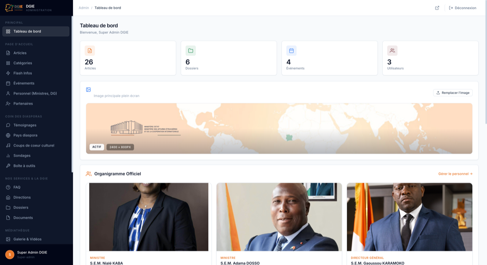
Tableau de bord — Statistiques et acces rapides
Statistiques rapides
Quatre cartes affichent les compteurs principaux en temps reel :
| Carte | Description |
|---|
| Articles | Nombre total d'articles publies sur le site |
| Dossiers | Nombre de dossiers thematiques actifs |
| Evenements | Nombre d'evenements programmes |
| Utilisateurs | Nombre d'utilisateurs du panneau admin |
Banniere Hero
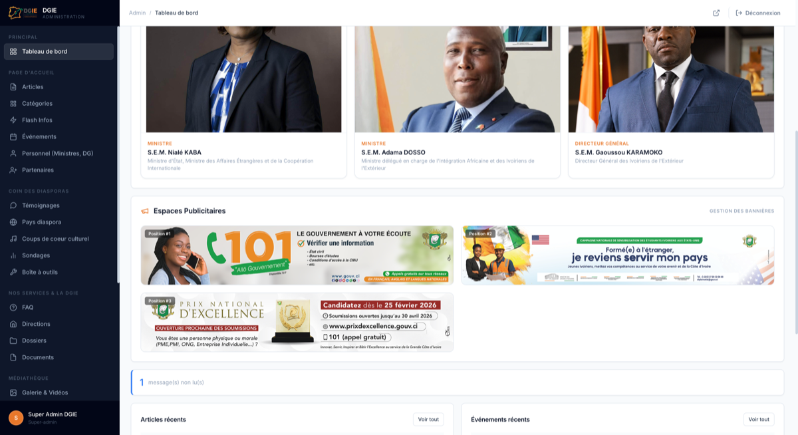
Tableau de bord — Gestion de la banniere hero et de l'organigramme
La banniere hero est l'image principale affichee en haut de la page d'accueil du site public.
- Cliquez sur le bouton "Modifier" dans la section "Banniere Hero"
- Telechargez une nouvelle image (format recommande : 2400 x 800 px)
- Ajoutez un lien optionnel de redirection
- Enregistrez
Organigramme officiel
Les portraits du Ministre et du Directeur General sont editables directement depuis le tableau de bord.
Espaces publicitaires
Trois emplacements de bannieres sont disponibles pour des communications institutionnelles (dimensions : 728x90 ou 300x250 px).
Alertes et contenu recent
Le tableau de bord affiche des alertes pour les commentaires en attente et les messages non lus, ainsi que deux tableaux de contenu recent (articles et evenements).
14 Gestion des Articles
Les articles constituent le contenu editorial principal du site. Ils alimentent la page d'accueil, la page Actualites, et les sections thematiques.

Administration — Liste des articles avec filtres et recherche
Creer un article
- Cliquez sur le bouton vert "Nouvel article" en haut a droite
- Remplissez les champs du formulaire (voir tableau ci-dessous)
- Cliquez sur "Enregistrer"
| Champ | Obligatoire | Description |
|---|
| Titre | Oui | Titre de l'article |
| Resume | Non | Court extrait affiche dans les listes d'articles |
| Contenu | Oui | Corps de l'article (editeur de texte enrichi) |
| Image a la une | Non | Image principale — format 16:9 recommande, max 2 Mo |
| Credit image | Non | Source ou credit de l'image |
| Categorie | Oui | Classification thematique de l'article |
| Section | Oui | Retour et Reintegration / Investir et Contribuer / Actions Sociales |
| Dossier | Non | Rattachement optionnel a un dossier thematique |
| Statut | Oui | Brouillon / Publie / Archive |
| Date de publication | Non | Date de publication (defaut : aujourd'hui) |
Statuts des articles
| Statut | Badge | Effet sur le site public |
|---|
| Brouillon | Brouillon | Non visible sur le site — en cours de redaction |
| Publie | Publie | Visible sur le site public |
| Archive | Archive | Retire du site public mais conserve en base |
Actions disponibles
- Rechercher : par titre ou resume via la barre de recherche
- Filtrer : par categorie, statut, ou section
- Voir (icone oeil) : pre-visualisation du contenu
- Modifier (icone crayon) : edition du contenu
- Supprimer (icone corbeille) : suppression avec confirmation
Suppression douce : Les articles supprimes ne sont pas effaces definitivement. Ils sont marques comme supprimes et peuvent etre restaures par un administrateur technique si necessaire.
15 Categories et Flash Infos
Categories
Les categories servent a classer les articles par thematique. Le slug (identifiant URL) est genere automatiquement a partir du nom.
| Champ | Obligatoire | Description |
|---|
| Nom | Oui | Nom de la categorie |
| Couleur | Non | Couleur du badge d'affichage |
Flash Infos
Les flash infos sont des messages courts qui defilent dans la barre d'information en haut du site public.
| Champ | Obligatoire | Description |
|---|
| Message | Oui | Texte court et percutant |
| Ordre | Non | Ordre d'affichage (le plus bas en premier) |
| Actif | Non | Seuls les flash infos actifs sont affiches |
16 Evenements
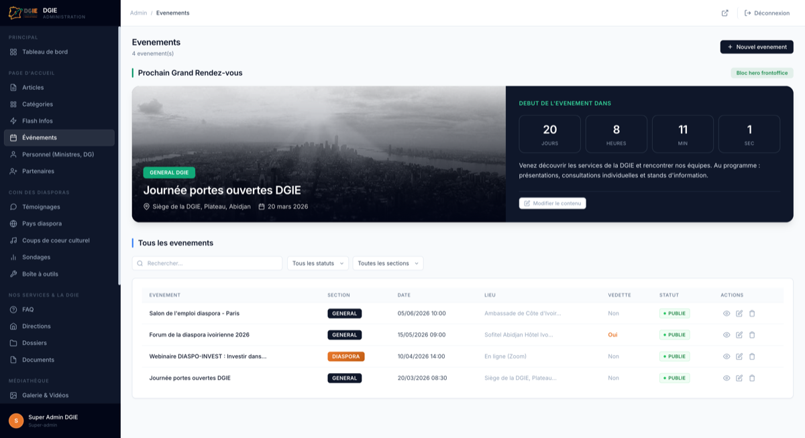
Administration — Gestion des evenements avec compte a rebours
Creer un evenement
| Champ | Obligatoire | Description |
|---|
| Titre | Oui | Nom de l'evenement |
| Type | Oui | General (DGIE) ou Diaspora |
| Lieu | Non | Lieu de l'evenement |
| Description | Non | Details et programme |
| Date de debut | Oui | Date et heure de debut |
| Date de fin | Non | Date et heure de fin |
| Image | Non | Affiche (format 16:9, max 2 Mo) |
| Statut | Oui | Brouillon / Publie / Archive |
| Mis en avant | Non | Cochez pour afficher dans la popup d'accueil |
Compte a rebours : Un compteur automatique s'affiche sur le site public pour le prochain evenement a venir.
17 Personnel et Partenaires
Personnel (Organigramme)
Ce module gere les fiches du personnel affichees sur la page "La DGIE" et dans l'organigramme du tableau de bord.
| Champ | Obligatoire | Description |
|---|
| Nom | Oui | Nom complet |
| Titre | Non | Ex : "Ministre d'Etat" |
| Fonction | Non | Ex : "Directeur de la DAOSAR" |
| Type | Oui | Ministre / Directeur General / Directeur / Autre |
| Citation | Non | Citation ou mot de la personne |
| Biographie | Non | Parcours et informations |
| Photo | Non | Photo portrait |
| Ordre d'affichage | Non | 0 = en premier |
| Actif | Non | Active/desactive l'affichage |
Partenaires
Les logos des partenaires institutionnels s'affichent sur la page d'accueil du site.
| Champ | Obligatoire | Description |
|---|
| Nom | Oui | Nom complet du partenaire |
| Abreviation | Non | Ex : "OIM", "HCR" |
| Site web | Non | URL du site du partenaire |
| Logo | Non | Format carre recommande, max 2 Mo |
| Ordre / Actif | Non | Ordre d'affichage et activation |
18 Coin des Diasporas (admin)
Ce groupe de modules alimente la page "Coin des Diasporas" du site public.
Temoignages
| Champ | Obligatoire | Description |
|---|
| Nom | Oui | Nom du temoin |
| Type | Oui | General / Retour / Investissement / Competence |
| Temoignage | Oui | Le recit complet |
| Contexte | Non | Ex : "Ivoirien de retour de France" |
| Parcours | Non | Ex : "France — Abidjan" |
| Annee de retour | Non | Annee de retour au pays |
| Photo / Dossier / Ordre / Actif | Non | Options complementaires |
Pays
Liste des pays de concentration de la diaspora ivoirienne (nom, drapeau emoji, estimation de population).
Coups de coeur culturels
Recommandations culturelles classees par type : Musique, Livre, Film, Gastronomie.
Sondages
Creez des sondages avec une question et plusieurs options de reponse. Un seul sondage actif a la fois est affiche sur le site.
Boite a outils
Ressources et liens utiles pour la diaspora (titre, description, lien URL).
19 Nos Services et La DGIE (admin)
FAQ (Foire aux questions)
Questions/reponses organisees par thematique et associables a des dossiers specifiques.
Directions (Sous-directions)
Gestion des 3 sous-directions : DAOSAR, DMCRIE, DAS (acronyme, nom complet, description, icone).
Dossiers
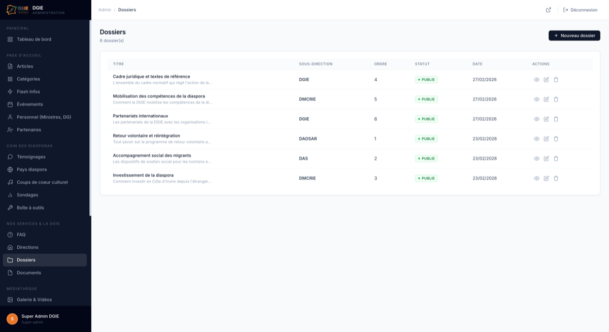
Administration — Gestion des dossiers thematiques
| Champ | Obligatoire | Description |
|---|
| Titre | Oui | Titre du dossier |
| Description | Oui | Resume du dossier |
| Contenu | Oui | Corps du dossier (editeur enrichi) |
| Sous-direction | Non | Direction associee |
| Image | Non | Image a la une (16:9, max 2 Mo) |
| Statut | Oui | Brouillon / Publie / Archive |
Contenu interconnecte : Les dossiers peuvent etre associes a des articles, des temoignages et des FAQ pour creer un ecosysteme de contenu riche.
Documents
Gestion des documents telechargeables (PDF, rapports, textes juridiques). Type : Juridique / Rapport / Organigramme / Autre. La taille est calculee automatiquement.
20 Mediatheque (admin)
Galerie et Videos
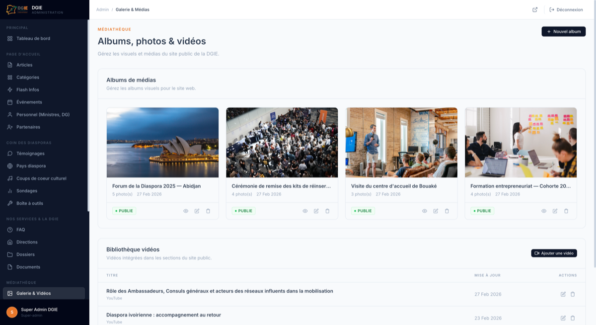
Administration — Gestion des albums de la galerie
La galerie organise les medias en albums. Chaque album peut contenir des photos et/ou des videos.
Creer un album :
- Cliquez sur "Nouvel album"
- Saisissez le titre et la description
- Choisissez une image de couverture
- Definissez le statut (Brouillon / Publie / Archive)
- Enregistrez, puis ajoutez des medias a l'album
Affichage automatique : Les 2 derniers albums publies apparaissent automatiquement dans la section "Galerie" de la page d'accueil. Tous les albums sont accessibles sur la page /galerie.
Bannieres
Gestion des bannieres promotionnelles par position (Top / Sidebar / Popup). Dimensions recommandees : hero 2400x800, publicites 728x90 ou 300x250.
Magazines
Publication des editions du magazine DGIE (titre, couverture, PDF telechargeables). Les visiteurs peuvent telecharger chaque edition depuis le site.
21 Communication
Messages de contact
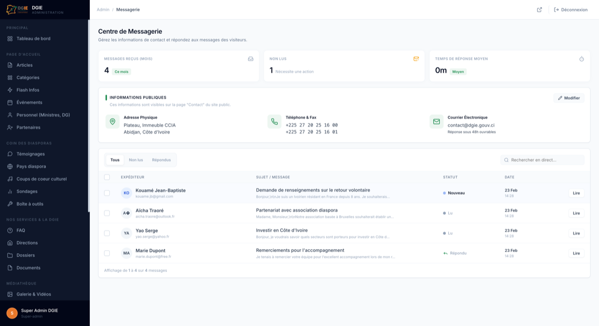
Administration — Centre de messagerie et coordonnees
Ce module centralise les messages envoyes par les visiteurs via le formulaire de contact.
Statistiques affichees :
- Nombre de messages recus ce mois-ci
- Nombre de messages non lus
- Temps de reponse moyen
Actions sur un message :
| Action | Description |
|---|
| Voir | Lire le contenu complet du message |
| Marquer comme lu | Change le statut de "Non lu" a "Lu" |
| Repondre | Saisir et enregistrer une reponse |
| Supprimer | Supprimer definitivement le message |
Coordonnees de contact
En bas de cette page, un formulaire permet de mettre a jour les coordonnees officielles affichees sur le site public : adresse, telephones, e-mail.
Newsletter
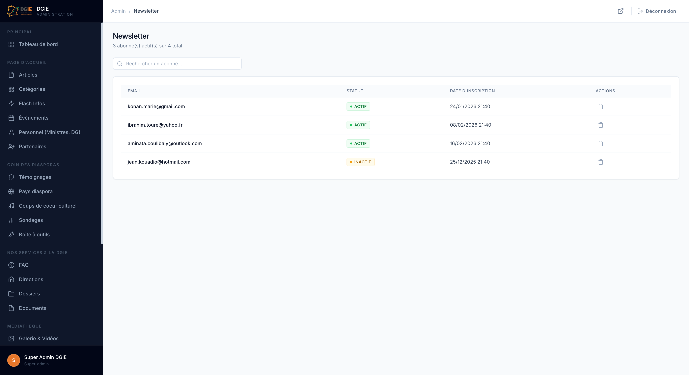
Administration — Gestion des abonnes a la newsletter
Ce module affiche la liste des abonnes a la newsletter (email, date d'inscription). Vous pouvez rechercher et supprimer des abonnes.
Commentaires

Administration — Moderation des commentaires
Les commentaires laisses par les visiteurs sur les articles sont soumis a moderation.
| Statut | Badge | Description |
|---|
| En attente | En attente | Le commentaire attend validation |
| Approuve | Approuve | Visible sur le site public |
| Rejete | Rejete | Non publie |
Important : Les commentaires ne sont jamais publies automatiquement. Chaque commentaire doit etre approuve manuellement par un administrateur ou editeur.
22 Administration — Utilisateurs et Parametres
Acces restreint : Cette section n'est visible et accessible que pour les utilisateurs ayant le role Super-Admin.
Gestion des utilisateurs
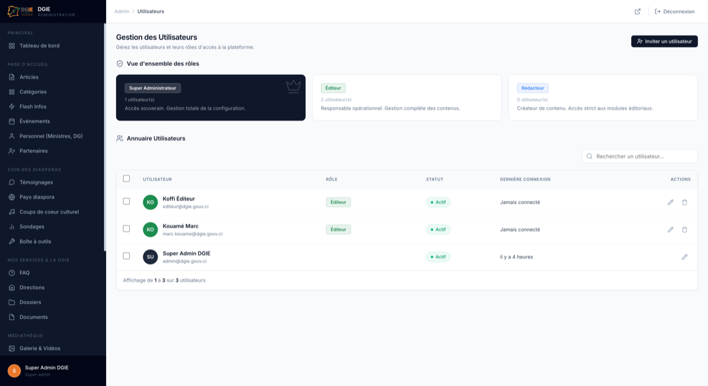
Administration — Gestion des utilisateurs et roles
Creer un utilisateur :
- Cliquez sur "Nouvel utilisateur"
- Remplissez le nom, l'email et choisissez le role
- Enregistrez — un mot de passe temporaire est genere automatiquement
- Communiquez le mot de passe temporaire de maniere securisee a l'utilisateur
Premiere connexion : L'utilisateur sera oblige de changer son mot de passe lors de sa premiere connexion. Le mot de passe temporaire ne sera plus valide apres le changement.
Parametres du site
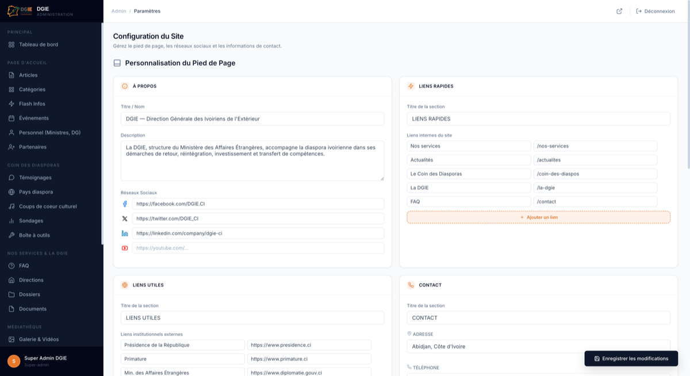
Administration — Configuration du pied de page et reseaux sociaux
Les parametres permettent de configurer le pied de page (footer) du site public, organise en 4 colonnes :
| Colonne | Contenu |
|---|
| A propos | Description + liens reseaux sociaux (Facebook, X, LinkedIn, YouTube) |
| Liens rapides | Liens internes vers les pages du site |
| Liens utiles | Liens vers des sites institutionnels externes |
| Informations legales | Mentions legales, politique de confidentialite, cookies |
ANNEXES
A Roles et permissions
La plateforme dispose de trois niveaux d'acces :
Super-Admin
- Acces complet a tous les modules
- Gestion des utilisateurs
- Configuration des parametres
- Creation et suppression
Editeur
- Acces a tous les modules de contenu
- Creation, modification, suppression
- Pas d'acces aux utilisateurs
- Pas d'acces aux parametres
Redacteur
- Acces aux articles uniquement
- Creation et modification
- Pas de suppression
- Pas d'acces aux autres modules
B Conventions et bonnes pratiques
Redaction de contenu
- Utilisez le vouvoiement dans tous les contenus publics
- Privilegiez des phrases courtes (25 mots maximum)
- Utilisez la voix active
- N'utilisez jamais "cliquez ici" — preferez des ancres descriptives
- Maximum 2 appels a l'action (CTA) par page
Formats d'images
| Type de contenu | Format recommande | Taille max |
|---|
| Article / Evenement | 16:9 (paysage) | 2 Mo |
| Personnel / Temoignage | Portrait | 2 Mo |
| Logo partenaire | Carre | 2 Mo |
| Banniere hero | 2400 x 800 px | 2 Mo |
| Banniere publicite | 728 x 90 ou 300 x 250 px | 2 Mo |
| Couverture magazine | Portrait | 2 Mo |
Formats acceptes : JPG, PNG, WebP
Champs automatiques
- Les slugs (identifiants URL) sont generes automatiquement a partir des titres
- Les dates de creation et modification sont enregistrees automatiquement
- Le compteur d'elements des albums galerie se met a jour automatiquement
- La taille des fichiers est calculee automatiquement pour les documents et magazines
Securite
- Ne partagez jamais vos identifiants de connexion
- Deconnectez-vous apres chaque session sur un poste partage
- Toutes les actions sensibles sont enregistrees dans un journal d'audit
- Les tentatives de connexion sont limitees a 5 par minute
C Plan du site complet
Pages publiques
| Page | URL |
|---|
| Accueil | https://ivoiriendelexterieur.com/ |
| Actualites | https://ivoiriendelexterieur.com/actualites |
| Article (detail) | https://ivoiriendelexterieur.com/actualites/{slug} |
| La DGIE | https://ivoiriendelexterieur.com/la-dgie |
| Nos Services | https://ivoiriendelexterieur.com/nos-services |
| Retour et Reintegration | https://ivoiriendelexterieur.com/retour-reintegration |
| Investir et Contribuer | https://ivoiriendelexterieur.com/investir-contribuer |
| Coin des Diasporas | https://ivoiriendelexterieur.com/coin-des-diaspos |
| Dossiers | https://ivoiriendelexterieur.com/dossiers |
| Dossier (detail) | https://ivoiriendelexterieur.com/dossiers/{slug} |
| Galerie | https://ivoiriendelexterieur.com/galerie |
| Evenement (detail) | https://ivoiriendelexterieur.com/evenements/{slug} |
| Contact | https://ivoiriendelexterieur.com/contact |
| Recherche | https://ivoiriendelexterieur.com/recherche |
| Mentions legales | https://ivoiriendelexterieur.com/mentions-legales |
| Politique de confidentialite | https://ivoiriendelexterieur.com/politique-confidentialite |
Pages d'administration
| Module | URL |
|---|
| Connexion | /admin/login |
| Tableau de bord | /admin/dashboard |
| Articles | /admin/articles |
| Categories | /admin/categories |
| Flash Infos | /admin/flash-infos |
| Evenements | /admin/evenements |
| Personnel | /admin/staff |
| Partenaires | /admin/partners |
| Temoignages | /admin/testimonials |
| Pays | /admin/countries |
| Coups de coeur | /admin/cultural-items |
| Sondages | /admin/polls |
| Boite a outils | /admin/toolkit-items |
| FAQ | /admin/faqs |
| Directions | /admin/departments |
| Dossiers | /admin/dossiers |
| Documents | /admin/documents |
| Galerie | /admin/galerie |
| Bannieres | /admin/banners |
| Magazines | /admin/magazines |
| Messages | /admin/contact-messages |
| Newsletter | /admin/newsletter |
| Commentaires | /admin/comments |
| Utilisateurs | /admin/utilisateurs |
| Parametres | /admin/settings |
Direction Generale des Ivoiriens de l'Exterieur
Ministere des Affaires Etrangeres — Republique de Cote d'Ivoire
https://ivoiriendelexterieur.com
Document confidentiel — Version 1.0 — Fevrier 2026